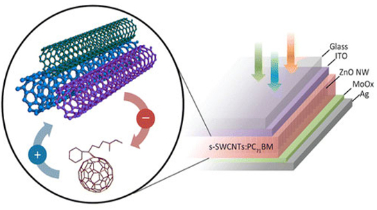

A new solar cell made from carbon nanotubes (CNTs) that is twice as good at converting sunlight into power than the best previous such cells has been unveiled by a team of researchers in the US. The National Renewable Energy Laboratory (NREL) has already independently certified the performance of the device – a first for a CNT-based solar cell.
Thin-film photovoltaic materials are better than conventional solar-cell materials (such as silicon) because they are lighter, more flexible and cheaper to make. They work by absorbing photons from sunlight and converting these into electron–hole pairs (or excitons). To generate electric current, an electron and hole must be rapidly separated before the two particles have a chance to come back together and be reabsorbed into the material. In solar cells, the exciton must quickly travel to another layer in the device (where the charge separation will occur) for the best light-absorption efficiencies
Thin-film photovoltaic materials are better than conventional solar-cell materials (such as silicon) because they are lighter, more flexible and cheaper to make. They work by absorbing photons from sunlight and converting these into electron–hole pairs (or excitons). To generate electric current, an electron and hole must be rapidly separated before the two particles have a chance to come back together and be reabsorbed into the material. In solar cells, the exciton must quickly travel to another layer in the device (where the charge separation will occur) for the best light-absorption efficiencies
 Single-walled carbon nanotubes (SWCNTs) are ideal as thin-film photovoltaics because they absorb light across a wide range of wavelengths from the visible to the near-infrared and possess charge carriers (electrons and holes) that move quickly. However, most thin-film cells containing SWCNTs have so far suffered from limited current and voltage, and therefore poor power-conversion efficiencies.
Now, a team led by Mark Hersam of Northwestern University and Shenqiang Ren of the University of Kansas, along with colleagues at the Massachusetts Institute of Technology, has designed a new type of solar cell containing polychiral SWCNTs and fullerenes that maximizes the amount of photocurrent produced by absorbing a broader range of solar-spectrum wavelengths. In particular, the cells significantly absorb in the near-infrared portion of the spectrum – a range that is currently inaccessible to many leading thin-film photovoltaic technologies, says Hersam.
A SWCNT is a sheet of carbon just one atom thick that has been rolled up into a tube with a diameter of about 1 nm. The atoms in the sheet are arranged in a hexagonal lattice and the relative orientation of the lattice to the axis of the tube is its chirality. "Previous CNT solar cells were mainly made from single-chirality CNTs, whereas our solar cells make use of tubes that are polychiral," explains Hersam. "By using these multiple chiralities, our CNT solar cells absorb across a wider portion of the solar spectrum, which leads to higher currents and efficiencies."
The researchers say that they also maximized the photovoltage produced by their solar cells by controlling the interface between the active photovoltaic layer and the underlying hole-transport layer. This interface layer allows the generated electrons and holes to meet and efficiently recombine.
The devices could reignite interest in all-carbon solar cells, a research area that has been neglected in recent years. The fact that the new cells absorb across a broad range of wavelengths, including in the near-infrared, means that they could be especially useful as the active elements in tandem or multi-junction devices. As their name suggests, these devices contain two or more junctions, each of which absorbs light of different wavelengths from the Sun. For example, the junctions at the front of the cell can be made of a wider band-gap material that harvests high-energy photons, while more abundant lower-energy photons can be collected by a smaller-band-gap material situated at the back of the cell. These devices perform better than their single-junction counterparts, with power conversion efficiencies of about 42% compared with just over 30%.
The team says that it is now busy trying to further improve the power-conversion efficiency of its CNT-based solar cells. "We also intend to introduce additional materials apart from fullerenes into our future cell designs that complement the properties of CNTs," says Hersam.
By Nano Letters.
Aug 15, 2014
Image author: Belle Dumé